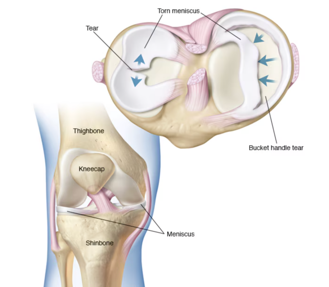
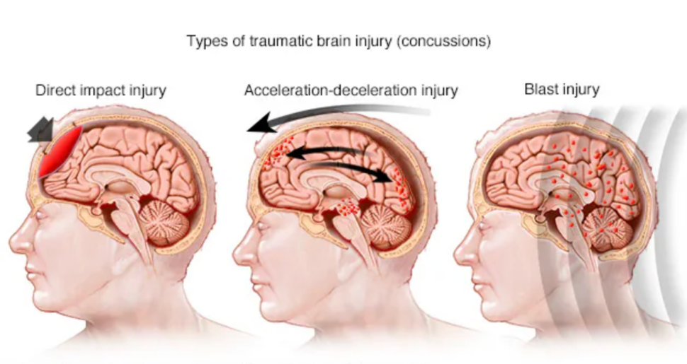
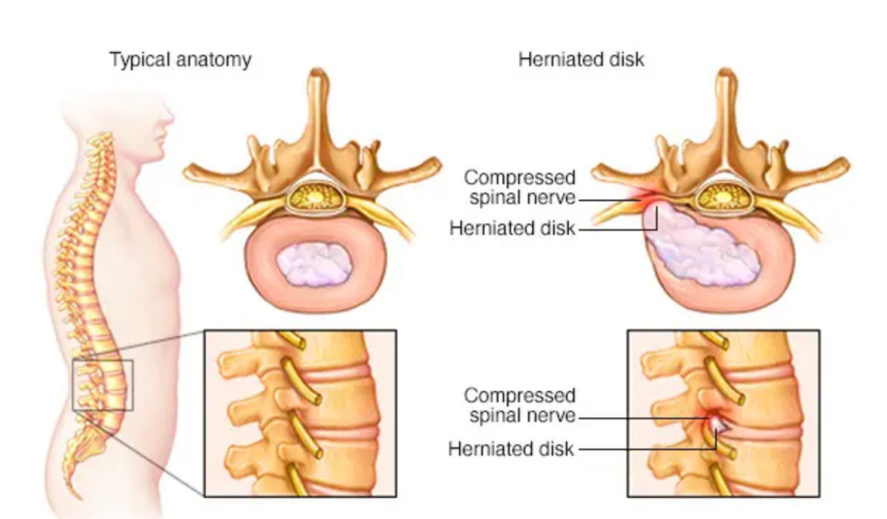
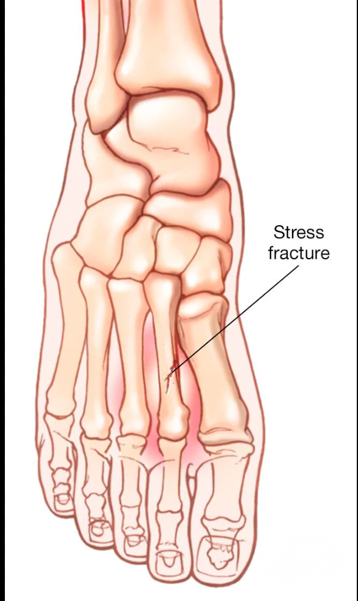
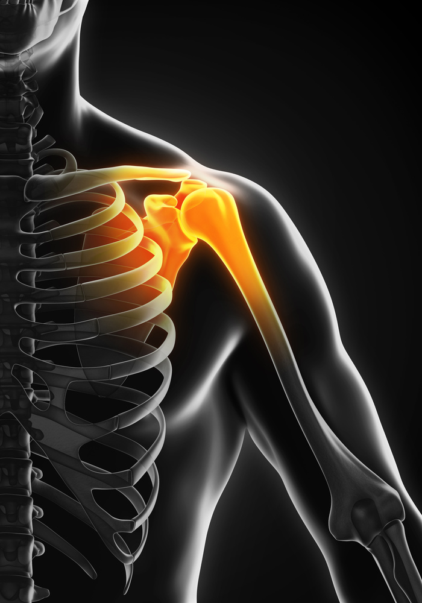
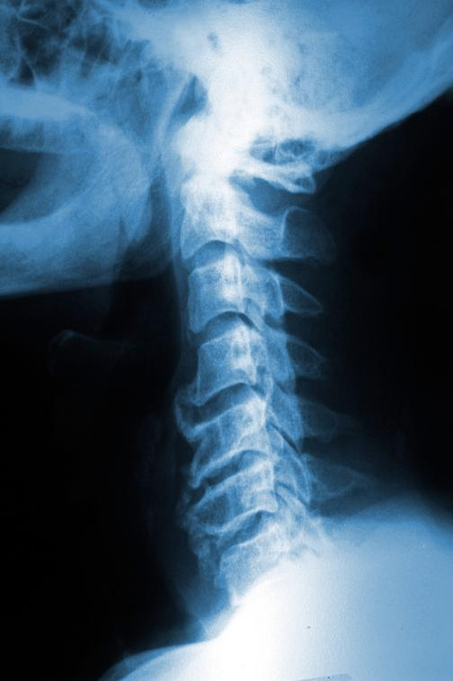
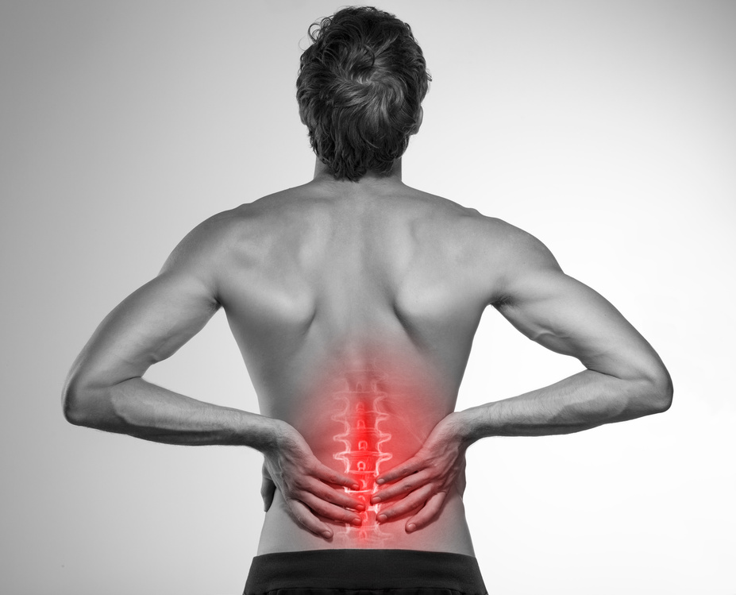
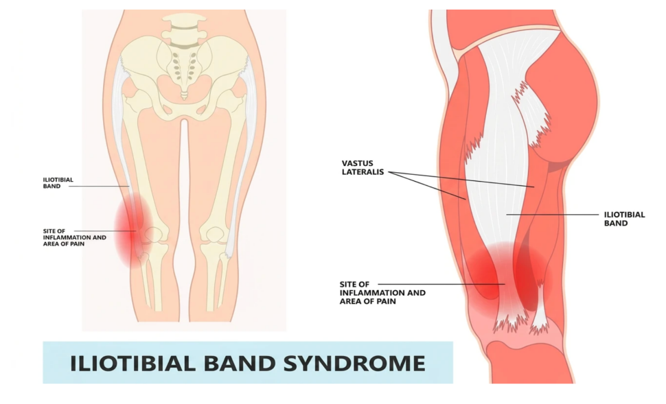
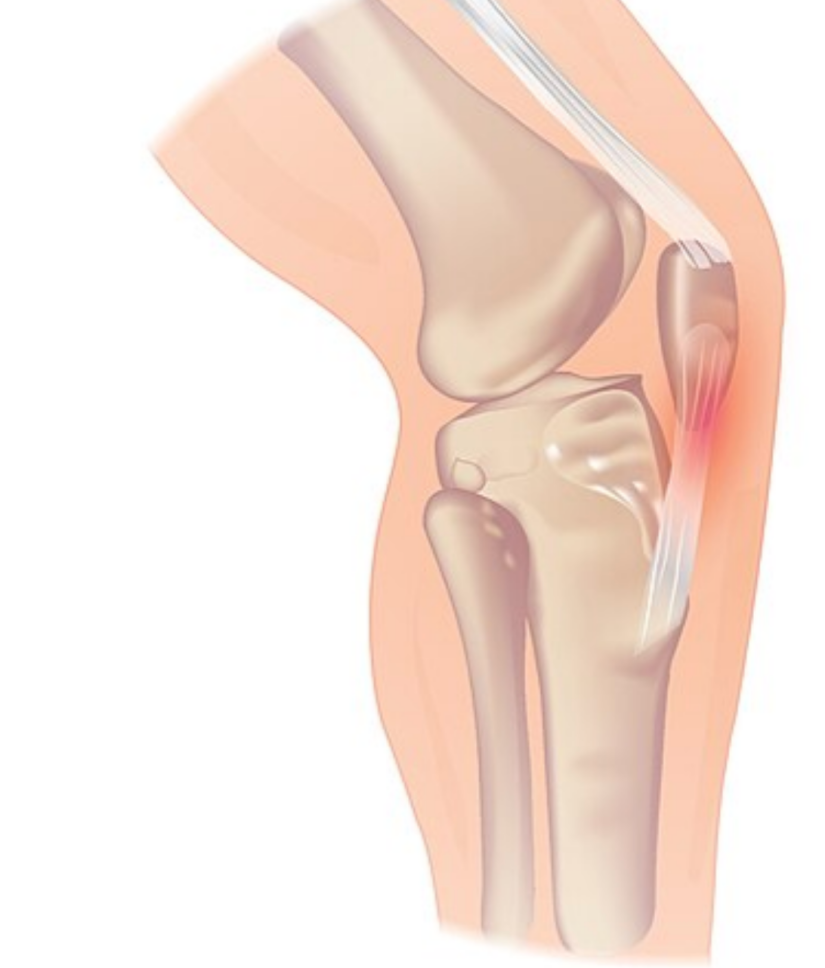
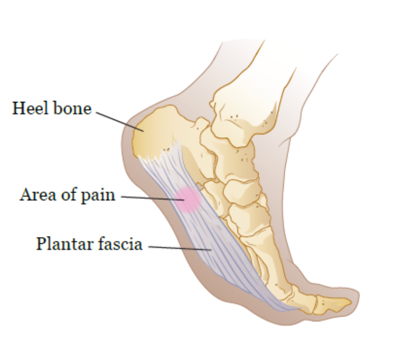

肌肉骨骼异常客户的注意事项 · 重点总结
本章节按"核心机制→症状要点→课程设计/安全注意"结构组织
跨病症通用原则
执业范围
● 私人教练的职责是运动评估，不是损伤评估/诊断
● 客户出现疼痛或受伤，必须转介给医疗保健专业人员
● 与医生/理疗师保持沟通，获取运动限制和恢复方案
愈合三阶段
表9-1
| 阶段 | 时间 | 特征 | 运动 | 禁忌 |
|---|---|---|---|---|
| I 炎症期 | 前3-4天 | 发红、肿胀、疼痛、局部发烫 | 零负重，主动ROM | 患处疼痛/肿胀时禁止训练 |
| II 修复期 | 3天-6周 | 瘢痕初步形成 | 耐受范围内负重，缓慢无痛运动 | — |
| III 重塑期 | 4周-2年 | 瘢痕组织力量增加 | 循序渐进无痛运动 | — |
● 急性期标准处理：RICE（休息Rest、冰敷Ice、压迫Compression、抬高Elevation）
● 冰敷：间接接触皮肤，每次≤20分钟，前24-48小时冰敷（非热敷）
● 压迫：弹性绷带包扎受伤部位，控制肿胀；绷带应扎牢但不可太紧（以免阻碍静脉血回流）
● 抬高：至心脏水平以上，有助于静脉血回流
伤后训练进度
● 训练进度须始终维持保守态度
● 与医生/理疗师保持联系，获取禁忌动作建议和推荐运动恢复方案
● 严格执行无痛训练课程后，组织重塑可功能完全恢复且无症状
● 受伤部位疼痛 = 应立即停止运动
疼痛管理
● 使用知觉疼痛等级量表（0-10级）
● 疼痛超过3级即停止运动（3级尚未引起不适/痛苦）
● 训练前及训练中持续评估疼痛等级
● 慢性疼痛会造成生物、心理和情绪影响（愤怒、绝望、抑郁、焦虑）
● 与客户沟通疼痛管理要点：
1. 锻炼前说明可能触及患处
2. 解释疼痛等级量表
3. 说明超过3级将中止锻炼
4. 鼓励客户交流任意程度的疼痛
5. 让客户在训练前及全程评估疼痛级别
预防肌肉骨骼损伤
● 柔韧性和弹性：损伤后瘢痕组织降低弹性；长期不运动、放疗、年龄增长均导致弹性下降；弹性差既是损伤成因也是后果
● 热身活动：覆盖所有运动平面，激活本体感受器，增加血流和结缔组织弹性；全方位预备操优先于单平面活动（如步行/骑行）
● 恢复：两节训练课之间留出充分修复时间；拉伸和自我肌筋膜放松舒缓僵硬肌肉
课程设计通用框架
● 热身更为重要（胶原↓、弹性↓），需覆盖所有运动平面
● 先解决ROM受限和姿势不良，再进阶
● 动力链思维：相邻关节功能障碍会影响远端
● 恢复期计划必不可少：组织修复+关节ROM
● 静态拉伸放在锻炼结束时（长时间拉伸后神经抑制、力量↓）；
● 若需抑制过度活跃肌肉/调整姿势，可在简单热身后先做静态拉伸
● 积极恢复计划是成功计划的重要部分
康复期肌肉和心肺训练注意事项
表9-2
| 损伤类型 | 可做的肌肉训练 | 可做的心肺训练 | 应避免 |
|---|---|---|---|
| 下肢损伤 | 上半身：坐位或卧位训练；下半身：按理疗师/医生指示；脊柱和髓核：不涉及患肢的训练 | 水中运动；上肢测力计；卧式/固定式自行车 | 任何引起疼痛的动作；负重训练（除非获医生/理疗师允许） |
| 上肢损伤 | 下半身：不涉及患肢的训练；上半身：按理疗师/医生指示；脊柱和髓核：不涉及患肢的训练 | 步行；卧式/固定式自行车；椭圆机 | 任何引起疼痛的动作；跑步（动力链影响可能致患肢疼痛）；需双手保持稳定性的训练 |
| 背部/脊柱损伤 | 理疗师/医生指示的练习和拉伸；可承受范围内的负重训练 | 水中运动；步行；卧式/固定式自行车 | 任何引起疼痛的动作；高频重复动作组（重复8-10次，避免疲乏）；负重脊柱旋转；需接触地面的运动（条件允许可垫高或用按摩椅） |
一、急性损伤
1.1 肌肉拉伤（Strain）
核心机制
● 肌肉超限工作→肌纤维撕裂；任何类型的用力都可能发生
分级
表9-3
| 级别 | 严重程度 | 体征 | 功能 |
|---|---|---|---|
| I级 | 轻度 | 轻度疼痛/酸痛，微量肿胀 | 肌力正常 |
| II级 | 中度 | 疼痛肿胀更严重，ROM↓ | 肌力↓，可能跛行 |
| III级 | 重度 | 肌肉完全撕裂，"撕裂/断裂"感，明显变形 | 功能丧失 |
● III级拉伤在老年人中更常见（胶原组织失去弹性）
● 愈合时间取决于严重程度；轻度损伤愈合各阶段可持续数日至数周；III级可能需要外科干涉
● 随年龄增长，即使轻度拉伤也需更长时间愈合
1.2 韧带扭伤（Sprain）

图9-1
核心机制
● 外力将韧带拉伸至损伤点（接触性或非接触性）
● ACL撕裂机制：膝关节过伸和/或扭伤
● 接触性：如橄榄球中膝前侧和外侧的撞击产生剪切力
● 非接触性：如篮球中踩硬地面同时突然切球和扭动
● 包含全方位力量和稳定性训练可降低非接触性损伤风险
分级
表9-4
| 级别 | 身体检查 | 功能损伤 | 病理 | 急性护理 |
|---|---|---|---|---|
| I级 | 轻微触痛/肿胀 | 轻微 | 胶原纤维微观撕裂 | RICE |
| II级 | 中度触痛/肿胀，ROM↓，可能不稳定 | 中度 | 部分胶原纤维完全撕裂 | RICE+医生评估 |
| III级 | 明显肿胀/触痛/不稳定 | 重度 | 韧带完全撕裂/破裂 | 空气夹板+RICE+立即就医 |
● 客户可能报告听到"砰砰"声后随即出现疼痛和肿胀
● II级扭伤出现不稳定、ROM下降和功能丧失
1.3 软骨损伤

图9-2
核心机制
● 关节受压迫+剪切力→软骨撕裂
● 膝关节最易发生（负重+活动自由度大）
● 年长者关节软骨已退化，较小的力即可撕裂
● 大部分软骨无血管→无法自行愈合，常需手术取出撕裂碎片
● 例外：半月板外侧1/3血管丰富，可手术修复（需较长术后零负重状态）
症状：关节僵硬、咔嗒/砰砰声、腿软、伸直受限、关节闭锁、疼痛肿胀、肌肉无力
1.4 骨折

图9-3
核心机制
● 压迫力（如伸直腿踩硬表面）、扭力或直接撞击导致
● 骨质疏松/骨癌/感染/放疗/骨量差者风险更高
体征：喀嚓声、变形、肿胀、淤青、疼痛触痛
紧急处理
● 防止骨骼和软组织进一步受伤，必要时急救应对休克
● 怀疑骨折应立即启动EMS，控制环境让客户静卧休息
● 冰敷可能加剧疼痛
● 仅在偏远地区EMS无法到场时，才用急救技能夹住/固定骨折肢
应力性骨折
● 骨形成/吸收失衡→反复应力→骨头不足以承受压迫力
● 所有骨头均可发生，股骨颈时有发生，胫骨最常见（常被误认为外胫夹）
● 长跑运动员高风险（骨量未及调整即增加里程）
● 特征：骨头某点触痛，疼痛局部且渐进，负重时加重；某些情况下静息/睡觉时也会酸痛，甚至局部肿胀
● 继续活动→加重→完全骨折风险
● 骨癌症状可能与应力性骨折相似，尽早诊断很重要
1.5 脑震荡

图9-4
核心机制
● 脑损伤导致精神状态改变（接触性运动、交通事故、跌倒或撞击均可引起）
● 可能伴随或没有短暂性意识丧失
体征
● 精神错乱、定向障碍、记忆丧失（重复提问、无法认人/识别地点）
● 言语迟钝/不清、动作不协调、头疼、恶心呕吐
● 警觉性降低、平衡感下降、眩晕、惊厥、四肢麻木/失去知觉
关键风险
● 脑震荡后脑部极脆弱→二次损伤可导致二次撞击综合征（危及生命）
● 必须立即停止活动
● 获有头部损伤治疗经验的合格医疗保健专业人员书面许可前，禁止任何活动
● 许可同时应提供书面活动恢复方案；恢复要循序渐进，私人教练需格外小心防症状复发
1.6 椎间盘损伤

图9-5
核心机制
● 椎间盘位于两椎骨之间，起减震、支撑和稳定作用，由胶原组成
● 压迫+剪切力→纤维环层撕裂→髓核胶状液渗漏→外层形成肿块
● 膨胀的外层压迫神经或卡在椎骨间→沿神经走向牵涉痛/剧烈疼痛
● Valsalva动作增加受伤风险（打喷嚏/咳嗽同理）
● 常见于腰椎
症状
● 可能出现坐骨神经痛或其他神经根病体征
● 沿受累神经走向剧烈刺痛、麻木和/或痛感，可能延伸至足部
处理：冰敷缓解疼痛，但需立即就医；客户可能疼到不能走路，需联系EMS转运至急诊室
二、过度使用症
2.1 肌腱炎/滑囊炎/筋膜炎
表9-5
| 病症 | 定义 | 成因 |
|---|---|---|
| 肌腱炎 | 肌腱炎症（-itis = 炎症） | 过度使用；急性→可转为慢性 |
| 滑囊炎 | 滑囊发炎 | 急性外伤有时引起；更多是反复应力/肌肉失衡/肌紧张 |
| 筋膜炎 | 结缔组织（筋膜）发炎 | 常见：足底筋膜炎、IT束摩擦综合征 |
● 急性肌腱炎 = 处于损伤愈合炎症阶段的肌腱炎
● 处理不当均可转为慢性
2.2 应力性骨折

图9-6
● 骨形成/吸收失衡处发生
● 长跑运动员高风险（骨量未及调整即增加里程）
● 胫骨最常见，常被误认为外胫夹
● 关键鉴别：应力性骨折为骨头某点触痛，疼痛局部、渐进、负重加重
● 某些情况下静息/睡觉时酸痛，甚至局部肿胀
● 继续活动→症状加重→完全骨折风险
● 需转介给医生诊断和治疗（骨癌症状可能类似，需排除）
三、上肢病症
3.1 肩部——肩峰撞击综合征/肩袖损伤

图9-7
核心机制
● 肩关节窝浅→骨稳定性差，靠盂唇+韧带+肩袖加固
● 肌肉力量/稳定性不足 + 不良姿势（圆肩/胸椎后凸）→肩胛骨偏离（偏向上侧和前侧）→肩峰下间隙变窄
● 冈上肌腱鞘+肩峰下滑囊被压迫→肩峰撞击综合征
● 可伴肱二头肌长头肌腱炎
● 肩袖弹性↓→肩袖撕裂（发生率随年龄↑）
● 肩袖肌肉作用：在过头运动中降低肱骨向前速度并稳定肱骨在关节窝中
● 多数人其他软组织可代偿→即使全层肩袖撕裂也可选择保守治疗和物理疗法而非手术
课程设计四步法
1. 解决不良姿势（圆肩/脊柱后凸）→伸展肩部前侧和前胸（抑制过度活跃肌肉，可在热身时完成）
2. 强化肩胛骨稳定肌（下斜方肌、中斜方肌、前锯肌）+肩袖
3. 通过受控前推动作改善肩前肌肉和胸大肌
4. 最后引入过头运动（在肩胛面——额状面前30°完成，防撞击/挤压）
关键动作
● 坐姿划船（强化肩胛稳定肌）
● 前锯肌推举
● 鸟狗式（闭链负重训练，激活肩袖而不使组织恶化）
● 农夫行走（开链训练，激活肩袖）
注意事项
● 应避免需要举过头的训练（稳定性和力量需求超出受损肩关节能力）
● 过头动作使肱骨头与肩峰接触更紧密，增加撞击风险
● 上半身整体力量、稳定性和ROM训练应纳入常规项目，预防疼痛和功能丧失
3.2 肘、腕和手
背景
● 工作及休闲中长期使用鼠标和键盘→过度使用损伤日渐增多
● 归咎于长时间静负荷及不恰当的办公设置
3.2.1外上髁炎（网球肘）

图9-8
● 肱骨外上髁起点附近→腕伸肌肌腱过度使用或反复外伤性损伤
● 30-55岁成年人常见
3.2.2内上髁炎（高尔夫球肘）

图9-9
● 肱骨内上髁→腕屈肌肌腱在起始处附近的过度使用或反复外伤性损伤
● 30-55岁成年人常见
3.2.3腕管综合征

图9-10
● 屈肌支持带下肌腱发炎→腕骨和屈肌支持带之间狭小间隙内炎症刺痛腕管→压迫正中神经→疼痛和麻木
● 建议客户向人力资源部申请工作环境的人体工程学评估
课程设计注意事项
● 肌腱发炎时应避免增加压力，消除所有可导致疼痛或不适的因素
● 需要腕部屈曲、伸展或握紧的训练需进行调整
● 腕管综合征适用与肘腱炎相同的注意事项
● 训练时使用夹板或矫形器可能有益（尤其持续疼痛的客户），但需由医生定夺
● 运动时应穿戴医生推荐和指定的手腕托，并遵从指导
课程设计四步法
1. 预防过度使用：牵引训练时引入多种手柄增加舒适感，和/或戴手套增加手与手柄/器械之间的摩擦力（减轻受损组织负荷）
2. 在各运动平面上缓慢拉伸，增加ROM
3. 通过训练改善腕部和手部力量（如俯卧撑、腕部屈伸）
4. 取下手柄或手套，在耐受范围内逐步增加牵引训练重量
3.3 肘/腕/手病症关键记忆点
● 网球肘 = 外上髁 + 伸肌肌腱；高尔夫球肘 = 内上髁 + 屈肌肌腱
● 腕管综合征 = 正中神经受压→疼痛麻木；需人体工程学评估
● 训练调整：多种手柄/手套/腕带减少握力需求
● 调整使腕部处于中间位置的训练项目（如正手窄握支撑架做俯卧撑）
四、脊柱病症
4.1 颈部

图9-11
核心机制
● 胸椎后凸加重→头部前倾姿势→颈部肌肉异常压力
● 脊柱通过骨性凸起物和软组织连接→任一位置错位引起连锁反应
● 示例：右侧腰骶段的竖脊肌（ace课本为这个骶竖肌，但不符合解剖学规范用语，特此标注。）紧张→右外侧屈曲→右肩抬高→左侧颈痛
● 解决动力链全段缩短的组织，不只是患处
● 单独强化颈部肌肉不应作为训练课程目标
课程设计步骤
1. 观察颈部相对胸椎和肩部位置→先矫正脊柱和肩部（圆肩和脊柱后凸尤其常见）
2. 教授柔和动作和拉伸（侧向拉伸、旋转拉伸）→客户感到不适时可随时进行
3. 疼痛严重或持续→转介给医生
4.2 下背部

图9-12
核心机制
● 80%成人会出现下背部疼痛，30%转为慢性
● 最常见于30-50岁人群；主要致残原因之一
● 常见原因：肌肉拉伤、长期静态姿势不良引起的软组织应激、身体素质差、椎间盘疾病、骨关节炎、类风湿性关节炎、强直性脊柱炎、癌症
● 明显脊柱前凸→腰骶段的竖脊肌（ace课本为这个骶竖肌，但不符合解剖学规范用语，特此标注。）+髋屈肌紧张+后侧链无力→下背部僵硬/疼痛
● 髋部灵活性不足→腰椎ROM代偿性增加（腰椎应保持不动）
● 竖脊肌是稳定肌，不是强大伸肌；臀肌和腘绳肌才是真正的髋伸肌
● 椎间盘损伤常发生在腰椎→可能出现坐骨神经痛/神经根病
关键肌肉对躯干/骨盆稳定性的作用
表9-6
| 肌群 | 功能 |
|---|---|
| 臀大肌 | 髋伸肌；支撑骨盆和躯干稳定；保持正确骨盆位置 |
| 腘绳肌 | 髋伸肌；支撑骨盆和躯干稳定；紧张时抑制髋铰链→骨盆后倾 |
| 腹直肌 | 稳定躯干；保持正确骨盆位置 |
| 腹内/外斜肌 | 稳定躯干；保持正确骨盆位置 |
| 背阔肌 | 附着胸腰筋膜→为腰椎提供稳定性 |
| 髋屈肌 | 紧张时抑制髋铰链→骨盆前倾 |
| 髋内旋肌 | 紧张时抑制髋铰链→骨盆前倾 |
| 髋外旋肌 | 紧张时抑制髋铰链→骨盆后倾 |
课程设计四步法
1. 纠正左右侧不平衡
2. 纠正前倾/后倾不良姿势（骨盆前倾或后倾）
3. 增加髋关节功能性内/外旋程度（如伐木训练向下=内旋，向上=外旋）
4. 强化后侧链肌群（尤其腘绳肌和臀肌）
日常脊柱稳定训练（每天都进行最有效）
● 猫牛式：有节律动作改善柔韧性并给组织热身；是动作训练非拉伸，重点在动作而非推到极限；猫式呼气，牛式吸气，中立位换气
● 改良式卷腹：保持腰椎中立位（手/毛巾垫于腰下）；一只膝弯一只腿伸直，锁定骨盆-腰椎位置；中间点交替弯曲腿
● 鸟狗式：双手对肩、双膝对髋→找到脊柱中立位→腹 muscles 保持稳定→对侧手臂和腿同时抬起→每侧保持5-8秒改善肌肉耐力
● 侧桥：腰方肌和腹部斜肌实现最佳稳定性；初级=肘+膝支撑→进阶=肘+脚支撑；维持颈部和脊柱中立位；每侧保持5-8秒
● 下背部训练：耐力优先于力量（慢缩姿势肌有保护作用）
● 重复低难度动作增强姿势耐力和力量
下蹲动作要点
● 下蹲是ADL中必要的动作模式（坐椅子、进出车辆、使用马桶）
● 常见缺陷：髋关节铰链协调性缺乏+后侧链肌群力量缺乏→膝盖向前超过脚趾→膝关节疼痛+下背部承受不必要压力
● 调整方案：
● 椅式（适合稳定性/力量/ROM不佳者）：握住固定物站在箱子/长凳前，向后向下坐；先屈髋再屈膝，双脚紧踩地面；可垫高座位降低难度；增大难度时减少手臂借力/降低箱子高度
● 自重深蹲（适合稳定性/力量/ROM尚可者）：侧重正确髋铰链和膝关节对齐；出现膝外翻时提醒向地面用力激活稳定肌
● 弹力带深蹲（适合准备增加后侧链力量但未准备杠铃/哑铃深蹲者）：弹力带抵消部分体重提供支撑；全程需后侧链和脊柱稳定肌对抗向前拉力
五、下肢病症
5.1 髋关节
背景
● 球窝关节，可进行多方向运动；髋臼是较深的骨性关节窝
● ROM有限，与关节囊和肌肉结构一起产生显著稳定性
● 久坐使髋部前侧肌肉缩短、后侧拉长→影响关节铰链能力
● 功能障碍可能上移至下背部或下移至膝部
梨状肌综合征

图9-13
● 梨状肌发紧/紧绷/发炎→压迫穿过梨状肌的坐骨神经和孖肌→类似腰椎间盘损伤的神经根病症状
● 22%人群坐骨神经隔断（穿过）梨状肌→更易患病
● 至少6%"下背痛"患者实际为梨状肌综合征
● 梨状肌作用：步行中充当髋外旋肌，稳定股骨头
● 评估要点：关注髂脊高度→评估骨盆位置及与股骨相对位置
● 示例：左侧骨盆高→左侧股骨相对骨盆内收+内旋→左侧肌肉被拉紧（IT束、外旋肌群、臀大肌）→坐骨神经受压
● 课程设计：平衡左右骨盆位置（紧张侧静态拉伸+紧绷侧强化）+髋关节闭链内外旋训练（改善灵活性和稳定性）
髋关节炎/髋关节置换术
● 关节炎：慢性疾病，关节疼痛和发炎
● 稳定性和强化训练可改善动作，提高ADL效率
● 保守治疗失败可建议髋关节置换术/全髋关节成形术
● 术后前几个月接受常规理疗；理疗结束后ROM可能与非手术侧不等
● 卧式自行车：改善心肺+ROM+股四头肌力量（优于固定式自行车，屈曲程度更大，更好挑战ROM）
● 固定式自行车：屈曲程度较小，适合努力恢复ROM的客户
● 柔和拉伸和动态ROM练习可鼓励进行，但期望须符合实际
髋关节课程设计四步法
1. 纠正左右侧不平衡
2. 改善髋关节内/外旋ROM+单脚站立稳定性
3. 改善髋关节铰链灵活性和稳定性
4. 改善后侧链肌群力量
注意：每一侧训练和伸展不同——一侧紧张肌肉做伸展，对侧较弱肌肉做强化；尽早在锻炼中加入静态拉伸（简单热身后），抑制紧张肌肉、增加ROM
5.2 膝部
背景
● 典型铰链式关节，但有2-3度旋转；由强健韧带和筋膜支撑，灵活性高（可弯曲至130°）
● 唯一穿过膝关节的肌腹是腘肌；其他移动/固定膝关节的肌肉以肌腱形式穿过
● 软骨损害和韧带扭伤常见
5.2.1髂胫束（IT束）摩擦综合征

图9-14
● IT束远端与股骨外侧上髁反复摩擦→膝外侧烧灼/刺痛（剧痛或刺痛）
● 15-50岁活跃人群常见（跑步者、骑行者、排球/举重运动员）
● 风险因素：过度使用、装备不当/鞋子不合脚、跑步平面改变、肌力失衡（无力或紧张）、结构异常（扁平足、膝外翻、下肢不等长）
● 骨盆失衡→IT束紧绷→增加与股骨外侧上髁接触
● 左侧骨盆高→左侧IT束紧绷
● 右侧阔筋膜张肌紧张→也可增加IT束与股骨外侧上髁接触
● 课程设计：紧张侧自我肌筋膜放松+静态伸展→纠正骨盆失衡→增加ROM和纠正左/右侧失衡
5.2.2膝部肌腱炎

图9-15
● 常见部位：髌腱、鹅足腱、股四头肌腱
● 跑步/上下楼梯/下蹲时疼痛
● 存在膝关节功能障碍时，关注髋关节、踝关节和足部（膝关节依赖临近关节保持稳定和缓冲地面反作用力）
● 足部旋前/旋后静态姿势评估→发现失衡→立即选择适当训练强化ROM或增强训练
● 髌骨肌腱炎时：四头肌很可能紧张→增加髌骨与股骨髁间压力→自我肌筋膜放松+伸展解决
● 肌肉训练侧重后侧链力量恢复（腓肠肌、腘绳肌、臀肌）
● 与客户保持沟通疼痛等级，疼痛限制时停止训练
5.2.3髌股疼痛综合征（PFPS）

图9-16
● 过度使用+生物力学改变+肌肉功能障碍→髌骨轨迹异常→软骨磨损→髌骨软骨软化
● 关键机制：膝关节屈曲时股骨内旋失控（膝外翻/X形腿）或IT束紧张将髌骨拉出滑车沟
● 下楼/下坡时疼痛加剧
● 生物力学异常因素：
● 扁平足→改变膝关节排列→胫骨/股骨代偿性内旋→改变髌股关节动力学
● IT束紧张→通过筋膜对髌骨产生过度横向力
● 腓肠肌/比目鱼肌紧张→代偿性内转+过度后向力→髌股关节压力↑
● 相关肌无力：
● 髋外展肌和外旋肌无力→活动时股骨内旋+膝外翻→髌股轨迹异常
● 需要四头肌减缓膝关节屈曲的活动（下楼梯、步行跑下坡）时，髌骨和股骨间隙变窄→疼痛加剧
● 课程设计四步法：
1. 纠正左右侧不平衡
2. 解决髋部/踝部/足部肌紧张和不稳定（防止股骨内旋）
3. 改善髋关节铰链灵活性和稳定性
4. 改善后侧链肌群力量
● 注意：开链膝关节伸展（坐位膝关节伸展）对单膝疼痛者应避开→选择负重闭链训练
膝关节炎/膝关节置换术
● 稳定性和强化训练可改善动作，提高ADL效率
● 保守治疗失败可建议膝关节置换术/全膝关节成形术
● 术后四头肌强化很重要，自行车训练课程有帮助
● 全膝关节ROM可能无法完全恢复
● 下蹲是重要运动模式，但膝关节ROM可能限制下蹲深度；掌握正确髋铰链节奏后，直腿硬拉可增加后侧链力量
膝关节课程设计四步法
1. 纠正左右侧不平衡
2. 解决髋部/踝部/足部可能造成股骨内旋的肌紧张和不稳定
3. 改善髋关节铰链灵活性和稳定性
4. 改善后侧链肌群力量
共同注意：每一侧训练和伸展不同；尽早加入静态拉伸增加ROM
5.3 脚踝和小腿
5.3.1外胫夹（胫骨内侧压力症候群 MTSS / 前外胫夹）

图9-17
● "外胫夹"是描述劳力性小腿疼痛的一般术语
● MTSS（后外胫夹）= 骨膜炎（骨膜炎症），影响腿部后关节腔肌肉（胫骨后肌、趾长屈肌、拇长屈肌和腘肌）
● 活跃人群的过劳性损伤，运动诱发性疾病，往往由活动突然变化引起
● 跑步者、舞蹈员和军人的常见损伤
● 前外胫夹 = 前关节腔肌肉受累（胫骨前肌、趾长伸肌、拇长伸肌及筋膜和骨膜内层）
● 与劳力性活动有关，病因尚未完全掌握
● 与应力性骨折鉴别：外胫夹不需要彻底静休，调整训练课程即可
● 课程设计调整：
● 提供低冲击力/低里程数项目+交叉训练备选（如停止跑步→改为骑行和游泳）
● 各部位有时间休息和愈合
● 逐步引入完整动作而不引起症状复发
● 小腿肌群（尤其比目鱼肌）无痛拉伸可有效缓解MTSS症状
● 静态姿势和动态评估→发现足部/踝关节错位或不稳定→恢复运动需改善足部和踝关节柔韧性和稳定性
5.3.2脚踝扭伤

图9-18
● 每年影响200万美国人（运动和高度活跃人群仅占一半）
● 外侧/内翻性扭伤最常见（约75%）→距腓前韧带、跟腓韧带、距腓后韧带
● 机制：过度跖屈+内翻
● 70%外侧扭伤导致反复性扭伤和慢性症状
● 内侧/外翻性少见（外侧腓骨头加固）；内侧三角肌韧带最常受累，损伤常需排除骨折
恢复训练
● 遵循与其他扭伤一样的运动恢复指导
● 负重关节，可能需更长时间恢复
● 愈合早期可能需使用拐杖；医生可能要求使用支架
● 可继续锻炼非损伤区域（如上半身）；损伤区域始终在运动中受保护
● 物理疗法结束后关键第一步：修复本体感受、柔韧性和力量
● 韧带是本体感受反馈的主要来源
● 渐进式单腿训练促进本体感受
● 避免在不平稳表面训练（半泡沫滚筒/微型蹦床）→超负荷本体感受系统（尤其初始阶段）
● 侧向运动打开外侧踝关节→可能产生不必要张力→确保客户准备好后再进行冠状面运动
5.3.3跟腱炎

图9-19
● 跟腱炎症→可能发展为II级或III级拉伤（尤其>45岁）
● III级拉伤=跟腱断裂，多由慢性跟腱炎引起
● 常见损伤机制：突然从站立位启动运动（如垒球比赛离开一垒）
● 结构性因素：高弓足、扁平足、腿长不等、外侧踝不稳
● 健身相关因素：训练机制不当、鞋子不合脚、肌肉无力、柔韧性差
● 课程设计可纳入具体训练项目逐步改善弹性；任何要求多平面反应度和脚趾离地推动的训练均可达成目标
● 进阶路径：简单提踵→绳梯操练
● 重获小腿柔韧性是关键，但避免过度拉伸跟腱（会刺激肌腱）
● 柔和动态拉伸作为热身一部分
● 站立位拉伸小腿时脚保持中立位（避免过度旋前/旋后），脚直指前方
● 逐步恢复背屈ROM和力量+步行抬脚阶段控制力
5.3.4足底筋膜炎

图9-20
● 足底/跖表面结缔组织发炎
● 可运动，但医疗专业人员可能叮嘱限制
● 目标：让客户感到具有挑战性但不使足部负荷过度的健身计划
● 将特定足部运动整合到一般健身计划中效果最好
● 拉伸腓肠肌/比目鱼肌/足底筋膜→缓解症状
● 自我肌筋膜放松（足底滚网球/自我肌筋膜放松球/高尔夫球）→提高背屈ROM+缓解疼痛
● 对整个后侧链肌群运用自我肌筋膜放松术也可提高背屈ROM
● 强化足内在肌→改善足弓稳定性→减少足底筋膜压力
足/踝/小腿课程设计四步法
1. 解决足部和脚踝灵活性和稳定性
2. 改善控制矢状面运动的肌肉力量
3. 改善控制横状面和冠状面运动的肌肉力量
4. 改善后侧链肌群力量
日常训练建议
● 拉伸：每日一次或每两天一次最有效；可推荐客户自行完成
● 即使存在小腿/足部功能障碍，用网球对足底筋膜自我肌筋膜放松也有益
● 平衡练习：每天做无过度使用风险；如刷牙时用患肢单脚站立练习平衡（每天两次1-2分钟本体感受训练）
表9-7
| 各病症关键记忆点总结 |
|---|
表9-8
| 病症 | 关键记忆点 |
|---|---|
| 愈合三阶段 | 炎症期（3-4天）→修复期（~6周）→重塑期（4周-2年）；急性期RICE处理 |
| 疼痛阈值 | 疼痛>3级即停止运动 |
| 肌肉拉伤 | I级轻/II级中/III级重（完全撕裂）；老年人更易III级 |
| 韧带扭伤 | I级微裂/II级部分撕裂/III级完全断裂；ACL机制=过伸+扭伤 |
| 软骨损伤 | 大部分无血管→无法自愈；半月板外侧1/3例外 |
| 脑震荡 | 二次撞击综合征可致命；必须完全停止直到获医疗许可 |
| 椎间盘损伤 | 压迫+剪切力→纤维环撕裂→髓核渗漏→压迫神经→牵涉痛；Valsalva也增加风险 |
| 肩峰撞击 | 肩胛面过头推举（额状面前30°）；先矫正姿势→强化肩胛稳定肌→再过头 |
| 网球肘 | 外上髁=伸肌肌腱；30-55岁常见；避免增加压力/腕部屈曲伸展握紧 |
| 高尔夫球肘 | 内上髁=屈肌肌腱；30-55岁常见；同网球肘注意事项 |
| 腕管综合征 | 屈肌支持带下→压迫正中神经→疼痛麻木；需人体工程学评估 |
| 肘/腕/手课程四步 | 预防过度使用（多手柄/手套）→各平面拉伸增ROM→腕手力量训练→逐步增牵引重量 |
| 颈部 | 脊柱错位引起连锁反应→解决动力链全段，不只是患处；单独强化颈部不应作为目标 |
| 下背部 | 80%成人会发生；30%转慢性；耐力优先于力量；每天训练最有效 |
| 下背部四步 | 纠正左右不平衡→纠正骨盆前/后倾→增加髋旋转ROM→强化后侧链 |
| 日常脊柱训练 | 猫牛式（动作训练非拉伸）+改良卷腹+鸟狗式（5-8秒/侧）+侧桥（5-8秒/侧） |
| 梨状肌综合征 | 22%坐骨神经穿过梨状肌；≥6%"下背痛"实为梨状肌综合征 |
| IT束摩擦 | 膝外侧疼痛；骨盆失衡→IT束紧绷→摩擦股骨外侧上髁 |
| 膝部肌腱炎 | 髌腱/鹅足腱/股四头肌腱；四头肌紧张→增加髌骨压力→自我肌筋膜放松+伸展 |
| PFPS | 股骨内旋失控+IT束紧张→髌骨轨迹异常；下楼/下坡痛加剧；扁平足/腓肠肌紧张/髋外展外旋无力均相关 |
| 膝关节注意 | 避开开链膝伸展→选闭链负重训练；全膝ROM可能无法完全恢复 |
| 外胫夹 vs 应力性骨折 | 外胫夹不需完全休息；应力性骨折为某点触痛、局部渐进痛 |
| 踝扭伤 | 75%在外侧；70%导致反复扭伤；机制=过度跖屈+内翻 |
| 踝扭伤恢复 | 修复本体感受→渐进单腿训练；避免不平稳表面；侧向运动确保准备好后再进行 |
| 跟腱炎 | 柔韧性是关键但避免过度拉伸；可进展为跟腱断裂（>45岁高危）；脚保持中立位直指前方 |
| 足底筋膜炎 | 拉伸小腿+足底筋膜；滚球自我肌筋膜放松提高背屈ROM+缓解疼痛；强化足内在肌改善足弓 |
| 下肢课程通用 | 灵活性/稳定性→矢状面→冠状面/横状面→后侧链力量 |
判断题
判断以下说法是否正确，点击展开参考答案。
查看答案
答案：错误。原文指出私人教练的职责是运动评估，不是损伤评估/诊断。客户出现疼痛或受伤，必须转介给医疗保健专业人员。
查看答案
答案：正确。原文指出急性期标准处理为RICE（休息Rest、冰敷Ice、压迫Compression、抬高Elevation），前24-48小时冰敷。
查看答案
答案：错误。原文指出冰敷应间接接触皮肤，每次≤20分钟。直接冰敷可能造成冻伤。
查看答案
答案：正确。原文明确疼痛超过3级即停止运动（3级尚未引起不适/痛苦），训练前及训练中需持续评估疼痛等级。
查看答案
答案：错误。原文指出静态拉伸放在锻炼结束时，因为长时间拉伸后会导致神经抑制和力量下降。
查看答案
答案：正确。原文指出III级拉伤在老年人中更常见（胶原组织失去弹性），愈合时间取决于严重程度。
查看答案
答案：错误。原文指出ACL撕裂机制包括接触性（如橄榄球撞击）和非接触性（如篮球踩硬地面同时突然切球和扭动）两种。
查看答案
答案：正确。原文指出大部分软骨无血管→无法自行愈合，常需手术取出撕裂碎片；例外是半月板外侧1/3血管丰富，可手术修复。
查看答案
答案：正确。原文指出脑震荡后脑部极脆弱，二次损伤可导致二次撞击综合征（危及生命），必须立即停止活动。
查看答案
答案：正确。原文指出Valsalva动作增加椎间盘受伤风险，打喷嚏/咳嗽同理。
查看答案
答案：错误。原文指出所有骨头均可发生应力性骨折，股骨颈时有发生，胫骨最常见（常被误认为外胫夹）。
查看答案
答案：正确。原文明确包含全方位力量和稳定性训练可降低非接触性损伤风险。